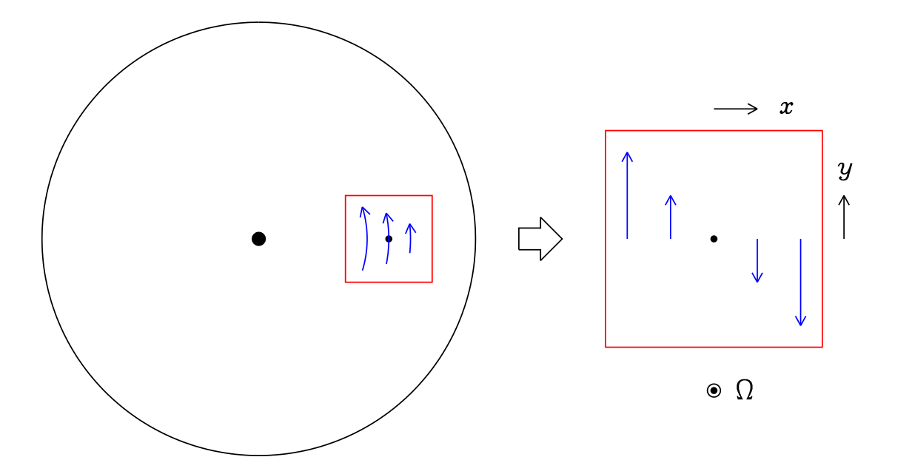
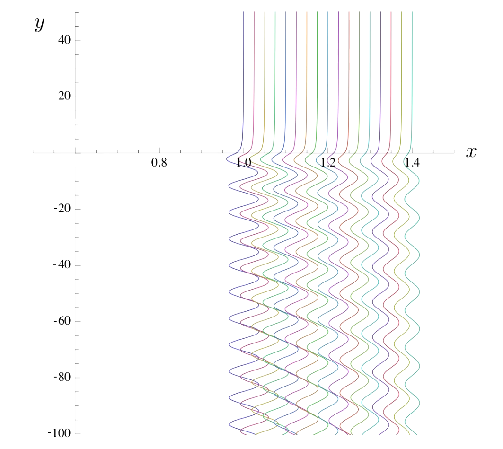

韦境量
2025.9.12
The local view of orbital dynamics
The local view of orbital dynamics
The local view of orbital dynamics
$$ r=r_0+x,\quad\phi=\Omega_0t+\frac{y}{r_0}. $$
The local view of orbital dynamics
$$ S=-r\frac{\mathrm{d}\Omega}{\mathrm{d}r}. $$
The local view of orbital dynamics
$$ \begin{align} \ddot{x}-2\Omega\dot{y}&=2\Omega Sx, \notag \\ \ddot{y}+2\Omega\dot{x}&=0. \notag \end{align} $$
The local view of orbital dynamics
$$ x=x_0, \quad \dot{y}=-Sx_0. $$
The local view of orbital dynamics
$$ \begin{align} x&=x_0+\text{Re}\left(Ae^{-i\Omega_rt}\right), \notag \\ y&=y_0-S_0x_0t+\text{Re}\left(\frac{2\Omega A}{i\Omega_r}e^{-i\Omega_r t}\right). \notag \end{align} $$
(a) The eqaution of motion in local view
$$ \begin{align} \ddot{x}-2\Omega\dot{y}&=2\Omega Sx-\frac{\partial\Psi}{\partial x},\notag \\ \ddot{y}+2\Omega\dot{x}&=-\frac{\partial\Psi}{\partial y},\notag \end{align} \quad\Psi(x,y)=-\frac{GM_s}{\sqrt{x^2+y^2}}. $$
(a) The eqaution of motion in local view
$$ \begin{align} \ddot{x}-2\Omega\dot{y}&=2\Omega Sx-\frac{\partial\Psi}{\partial x},\notag \\ \ddot{y}+2\Omega\dot{x}&=-\frac{\partial\Psi}{\partial y},\notag \end{align} \quad\Psi(x,y)=-\frac{GM_s}{\sqrt{x^2+y^2}}. $$
$$ \begin{align} L&=\frac{1}{2}\left(\dot{r}^2+r^2\dot{\phi}^2\right)-\underbrace{\Phi(r)}_{\text{centrifugal potential}}-\underbrace{\Psi(r\cos\phi,r\sin\phi)}_{\text{from satellite}}\notag \\ &=\frac{1}{2}\left(\dot{x}^2+(r_0+x)^2\left(\Omega_0+\frac{\dot{y}}{r_0}\right)^2\right)-\Phi(r_0+x)-\Psi(x,y),\notag \end{align} $$
$$ L=L_0+L_1+L_2+..., $$
(a) The eqaution of motion in local view
$$ \begin{align} \ddot{x}-2\Omega\dot{y}&=2\Omega Sx-\frac{\partial\Psi}{\partial x},\notag \\ \ddot{y}+2\Omega\dot{x}&=-\frac{\partial\Psi}{\partial y},\notag \end{align} \quad\Psi(x,y)=-\frac{GM_s}{\sqrt{x^2+y^2}}. $$
$$ \begin{align} L_0&=\frac{1}{2}r_0^2\Omega_0^2-\Phi_0=\text{constant},\notag \\ L_1&=r_0\Omega_0\dot{y}+(r_0\Omega_0^2-\partial_r\Phi|_{(0,0)})x=r_0\Omega_0\dot{y}=\frac{\mathrm{d}}{\mathrm{d}t}(r_0\Omega_0y),\notag \\ L_2&=\frac{1}{2}\left(\dot{x}^2+\dot{y}^2\right)+2\Omega_0x\dot{y}+\frac{1}{2}\Omega_0^2x^2-\frac{1}{2}\partial^2_{rr}\Phi|_{(0,0)}x^2-\Psi(x,y).\notag \end{align} $$
$$ \partial_r\Phi|_{(0,0)}=r_0\Omega_0^2\quad\Rightarrow\quad\partial^2_{rr}\Phi|_{(0,0)}=\Omega_0^2-2\Omega_0 S_0, $$ $$ \Rightarrow L_2=\frac{1}{2}\left(\dot{x}^2+\dot{y}^2\right)+2\Omega_0x\dot{y}+\Omega_0 S_0x^2-\Psi(x,y). $$
(a) The eqaution of motion in local view
$$ \begin{align} \ddot{x}-2\Omega\dot{y}&=2\Omega Sx-\frac{\partial\Psi}{\partial x},\notag \\ \ddot{y}+2\Omega\dot{x}&=-\frac{\partial\Psi}{\partial y},\notag \end{align} \quad\Psi(x,y)=-\frac{GM_s}{\sqrt{x^2+y^2}}. $$
$$ L_2=\frac{1}{2}\left(\dot{x}^2+\dot{y}^2\right)+2\Omega_0x\dot{y}+\Omega_0 S_0x^2-\Psi(x,y). $$
$$ \begin{align} \ddot{x}&=2\Omega_0\dot{y}+2\Omega_0 S_0x-\frac{\partial\Psi}{\partial x},\notag \\ \ddot{y}+2\Omega_0\dot{x}&=-\frac{\partial\Psi}{\partial y}.\notag \end{align} $$
(b) Express $\Omega_r$ and $A$ in terms of position and velocity:
$$ \begin{align} p_y&=\frac{\Omega_r^2}{2\Omega}x_0,\notag \\ A&=\left[-\frac{2\Omega}{\Omega_r^2}(\dot{y}+Sx)+\frac{i\dot{x}}{\Omega_r}\right]e^{i\Omega_r t}.\notag \end{align} $$
(b) Express $\Omega_r$ and $A$ in terms of position and velocity:
$$ \begin{align} p_y&=\frac{\Omega_r^2}{2\Omega}x_0,\notag \\ A&=\left[-\frac{2\Omega}{\Omega_r^2}(\dot{y}+Sx)+\frac{i\dot{x}}{\Omega_r}\right]e^{i\Omega_r t}.\notag \end{align} $$
$$ \left\{\begin{array}{l} x=x_0+\text{Re}\left(Ae^{-i\Omega_r t}\right),\notag \\ y=y_0-Sx_0t+\text{Re}\left(\dfrac{2\Omega A}{i\Omega_r}e^{-i\Omega_r t}\right).\notag \end{array}\right. $$
$$ \Rightarrow\left\{\begin{array}{l} \dot{x}=\text{Re}\left(-i\Omega_rAe^{-i\Omega_rt}\right)=\Omega_r\text{Im}\left(Ae^{-i\Omega_rt}\right),\notag \\ \begin{align} \dot{y}&=-Sx_0-2\Omega\text{Re}\left(Ae^{-i\Omega_rt}\right)\notag \\ &=-Sx-(2\Omega-S)\text{Re}\left(Ae^{-i\Omega_rt}\right).\notag \end{align} \end{array}\right. $$
(b) Express $\Omega_r$ and $A$ in terms of position and velocity:
$$ \begin{align} p_y&=\frac{\Omega_r^2}{2\Omega}x_0,\notag \\ A&=\left[-\frac{2\Omega}{\Omega_r^2}(\dot{y}+Sx)+\frac{i\dot{x}}{\Omega_r}\right]e^{i\Omega_r t}.\notag \end{align} $$
$$ \begin{align} p_y&=\frac{\partial L_2}{\partial \dot{y}}=\dot{y}+2\Omega x\notag \\ &=-Sx_0-2\Omega\text{Re}\left(Ae^{-i\Omega_r t}\right)+2\Omega\left(x_0+\text{Re}\left(Ae^{-i\Omega_r t}\right)\right)=(2\Omega-S)x_0,\notag \end{align} $$ $\Omega_r^2=2\Omega(2\Omega-S)$ $$ \Rightarrow p_y=\frac{\Omega_r^2}{2\Omega}x_0. $$
(b) Express $\Omega_r$ and $A$ in terms of position and velocity:
$$ \begin{align} p_y&=\frac{\Omega_r^2}{2\Omega}x_0,\notag \\ A&=\left[-\frac{2\Omega}{\Omega_r^2}(\dot{y}+Sx)+\frac{i\dot{x}}{\Omega_r}\right]e^{i\Omega_r t}.\notag \end{align} $$
$$ \begin{align} Ae^{-i\Omega_rt}&=\text{Re}\left(Ae^{-i\Omega_rt}\right)+i\text{Im}\left(Ae^{-i\Omega_rt}\right)\notag \\ &=-\frac{\left(\dot{y}+Sx\right)}{(2\Omega-S)}+\frac{i\dot{x}}{\Omega_r}\notag \end{align} $$ $$ \Rightarrow A=\left[-\frac{2\Omega}{\Omega_r^2}\left(\dot{y}+Sx\right)+\frac{i\dot{x}}{\Omega_r}\right]e^{i\Omega_rt}. $$
(c) The excitation by a satellite
$$ \begin{align} \dot{p}_y&=-\frac{\partial\Psi}{\partial y},\notag \\ \varepsilon+\Psi&=\text{constant},\notag \\ \dot{A}&=\left(\frac{2\Omega}{\Omega_r^2}\frac{\partial\Psi}{\partial y}-\frac{i}{\Omega_r}\frac{\partial\Psi}{\partial x}\right)e^{i\Omega_r t},\notag \end{align} $$ $$ \varepsilon=\frac{1}{2}\Omega_r^2|A|^2-\frac{\Omega S}{\Omega_r^2}p_y^2. $$
(c) The excitation by a satellite
$$ \begin{align} \dot{p}_y&=-\frac{\partial\Psi}{\partial y},\notag \\ \varepsilon+\Psi&=\text{constant},\notag \\ \dot{A}&=\left(\frac{2\Omega}{\Omega_r^2}\frac{\partial\Psi}{\partial y}-\frac{i}{\Omega_r}\frac{\partial\Psi}{\partial x}\right)e^{i\Omega_r t},\notag \end{align} \quad\varepsilon=\frac{1}{2}\Omega_r^2|A|^2-\frac{\Omega S}{\Omega_r^2}p_y^2. $$
$$ \dot{A}=\left[-\frac{2\Omega}{\Omega_r^2}\left(\ddot{y}+S\dot{x}\right)+\frac{i\ddot{x}}{\Omega_r}-\frac{2i\Omega}{\Omega_r}\left(\dot{y}+Sx\right)-\dot{x}\right]e^{i\Omega_rt}, $$ $\Omega_r^2=4\Omega^2-2\Omega S$ $$ \begin{align} \dot{A}&=\left[-\frac{2\Omega}{\Omega_r^2}\left(\ddot{y}+2\Omega\dot{x}\right)+\frac{i}{\Omega_r}\left(\ddot{x}-2\Omega\dot{y}-2\Omega Sx\right)\right]e^{i\Omega_rt},\notag \\ &=\left(\frac{2\Omega}{\Omega_r^2}\frac{\partial\Psi}{\partial y}-\frac{i}{\Omega_r}\frac{\partial\Psi}{\partial x}\right)e^{i\Omega_r t}.\notag \end{align} $$
(c) The excitation by a satellite
$$ \begin{align} \dot{p}_y&=-\frac{\partial\Psi}{\partial y},\notag \\ \varepsilon+\Psi&=\text{constant},\notag \\ \dot{A}&=\left(\frac{2\Omega}{\Omega_r^2}\frac{\partial\Psi}{\partial y}-\frac{i}{\Omega_r}\frac{\partial\Psi}{\partial x}\right)e^{i\Omega_r t},\notag \end{align} \quad\varepsilon=\frac{1}{2}\Omega_r^2|A|^2-\frac{\Omega S}{\Omega_r^2}p_y^2. $$
$$ \varepsilon=\frac{1}{2}\left(\dot{x}^2+\dot{y}^2\right)-\Omega Sx^2 $$ $$ \Omega_rA=\left[-\frac{2\Omega}{\Omega_r}\left(\dot{y}+Sx\right)+i\dot{x}\right]e^{i\Omega_rt} $$
$$ \begin{align} \Omega_r^2|A|^2&=\dot{x}^2+\frac{4\Omega^2}{\Omega_r^2}\left(\dot{y}+Sx\right)^2\notag \\ &=2\varepsilon-\dot{y}^2+2\Omega Sx^2+\frac{4\Omega^2}{\Omega_r^2}\left(\dot{y}+Sx\right)^2\notag \\ &=2\varepsilon+\frac{2\Omega S}{\Omega_r^2}\dot{y}^2+\frac{8\Omega^2S}{\Omega_r^2}\dot{y}x+\frac{8\Omega^3S}{\Omega_r^2}x^2\notag \\ &=2\varepsilon+\frac{2\Omega S}{\Omega_r^2}\left(\dot{y}+2\Omega x\right)^2\notag \end{align} $$
(c) The excitation by a satellite
$$ \begin{align} \dot{p}_y&=-\frac{\partial\Psi}{\partial y},\notag \\ \varepsilon+\Psi&=\text{constant},\notag \\ \dot{A}&=\left(\frac{2\Omega}{\Omega_r^2}\frac{\partial\Psi}{\partial y}-\frac{i}{\Omega_r}\frac{\partial\Psi}{\partial x}\right)e^{i\Omega_r t},\notag \end{align} \quad\varepsilon=\frac{1}{2}\Omega_r^2|A|^2-\frac{\Omega S}{\Omega_r^2}p_y^2. $$
$$ \begin{align} \Omega_r^2|A|^2&=\dot{x}^2+\frac{4\Omega^2}{\Omega_r^2}\left(\dot{y}+Sx\right)^2\notag \\ &=2\varepsilon-\dot{y}^2+2\Omega Sx^2+\frac{4\Omega^2}{\Omega_r^2}\left(\dot{y}+Sx\right)^2\notag \\ &=2\varepsilon+\frac{2\Omega S}{\Omega_r^2}\dot{y}^2+\frac{8\Omega^2S}{\Omega_r^2}\dot{y}x+\frac{8\Omega^3S}{\Omega_r^2}x^2\notag \\ &=2\varepsilon+\frac{2\Omega S}{\Omega_r^2}\left(\dot{y}+2\Omega x\right)^2\notag \end{align} $$
$$ \Rightarrow\varepsilon=\frac{1}{2}\Omega_r^2|A|^2-\frac{\Omega S}{\Omega_r^2}p_y^2 $$
(a) The change of amplitude $\Delta A$
$$ \Delta A=-iC\frac{GM_s}{\Omega_rSx_0^2} $$ $$ C=f\left(\frac{\Omega_r}{S}\right)-\frac{2\Omega}{\Omega_r}f'\left(\frac{\Omega_r}{S}\right) $$ $$ f(k)=\int_{-\infty}^\infty\left(1+x^2\right)^{-3/2}\cos kx\mathrm{d}x=2kK_1(k)\quad(k>0) $$
(a) The change of amplitude $\Delta A$
$$ \Delta A=-iC\frac{GM_s}{\Omega_rSx_0^2} \quad\quad C=f\left(\frac{\Omega_r}{S}\right)-\frac{2\Omega}{\Omega_r}f'\left(\frac{\Omega_r}{S}\right) $$ $$ f(k)=\int_{-\infty}^\infty\left(1+x^2\right)^{-3/2}\cos kx\mathrm{d}x=2kK_1(k)\quad(k>0) $$
$$ x=x_0=\text{constant},\quad y=-Sx_0t. $$ $\Psi=-GM_s\left(x^2+y^2\right)^{-1/2}$
$$ \begin{align} \dot{A}&=\left(\frac{2\Omega}{\Omega_r^2}\frac{\partial\Psi}{\partial y}-\frac{i}{\Omega_r}\frac{\partial\Psi}{\partial x}\right)e^{i\Omega_rt}\notag \\ &=GM_s\left(x^2+y^2\right)^{-3/2}\left(\frac{2\Omega y}{\Omega_r^2}-\frac{ix}{\Omega_r}\right)e^{i\Omega_r t}\notag \\ &\approx-i\frac{GM_s}{\Omega_rx_0^2}\left(1+S^2t^2\right)^{-3/2}\left(1-i\frac{2\Omega}{\Omega_r}St\right)e^{i\Omega_rt},\notag \end{align} $$
(a) The change of amplitude $\Delta A$
$$ \Delta A=-iC\frac{GM_s}{\Omega_rSx_0^2} \quad\quad C=f\left(\frac{\Omega_r}{S}\right)-\frac{2\Omega}{\Omega_r}f'\left(\frac{\Omega_r}{S}\right) $$ $$ f(k)=\int_{-\infty}^\infty\left(1+x^2\right)^{-3/2}\cos kx\mathrm{d}x=2kK_1(k)\quad(k>0) $$
$$ \begin{align} \dot{A}&=\left(\frac{2\Omega}{\Omega_r^2}\frac{\partial\Psi}{\partial y}-\frac{i}{\Omega_r}\frac{\partial\Psi}{\partial x}\right)e^{i\Omega_rt}\notag \\ &=GM_s\left(x^2+y^2\right)^{-3/2}\left(\frac{2\Omega y}{\Omega_r^2}-\frac{ix}{\Omega_r}\right)e^{i\Omega_r t}\notag \\ &\approx-i\frac{GM_s}{\Omega_rx_0^2}\left(1+S^2t^2\right)^{-3/2}\left(1-i\frac{2\Omega}{\Omega_r}St\right)e^{i\Omega_rt},\notag \end{align} $$
$$ \begin{align} \Delta A&=\int_{-\infty}^\infty\dot{A}\mathrm{d}t\notag \\ &=-i\frac{GM_s}{\Omega_rx_0^2}\int_{-\infty}^\infty\left(1+S^2t^2\right)^{-3/2}\left(\cos\Omega_rt+\frac{2\Omega}{\Omega_r}St\sin\Omega_rt\right)\mathrm{d}t.\notag \end{align} $$
(b) The change of $y$-momentum $\Delta p_y$
$$ \Delta p_y=\frac{\left(CGM_s\right)^2}{2S^3x_0^5}. $$
(b) The change of $y$-momentum $\Delta p_y$
$$ \Delta p_y=\frac{\left(CGM_s\right)^2}{2S^3x_0^5}. $$
Long before and after the encounter, $\Psi\rightarrow0$. $\Rightarrow\Delta\varepsilon=0$ $$ \varepsilon=\frac{1}{2}\Omega_r^2|A|^2-\frac{\Omega S}{\Omega_r^2}p_y^2 $$
$$ \Rightarrow\Delta\left(p_y^2\right)=\frac{\Omega_r^4}{2\Omega S}\Delta\left(|A|^2\right). $$
$$ A=0,\quad p_y=\frac{\Omega_r^2}{2\Omega}x_0. $$ $$ A\approx-iC\frac{GM_s}{\Omega_rSx_0^2}, $$
(b) The change of $y$-momentum $\Delta p_y$
$$ \Delta p_y=\frac{\left(CGM_s\right)^2}{2S^3x_0^5}. $$
$$ \Delta\left(p_y^2\right)=\frac{\Omega_r^4}{2\Omega S}\Delta\left(|A|^2\right). $$
$$ \Delta\left(p_y^2\right)\approx 2p_y\Delta p_y=2\frac{\Omega_r^2}{2\Omega}x_0\Delta p_y=\frac{\Omega_r^4}{2\Omega S}\left(C\frac{GM_s}{\Omega_rSx_0^2}\right)^2 $$ $$ \Rightarrow\Delta p_y=\frac{\left(CGM_s\right)^2}{2S^3x_0^5}. $$
$$ \Delta A=-iC\frac{GM_s}{\Omega_rSx_0^2} \quad\quad \Delta p_y=\frac{\left(CGM_s\right)^2}{2S^3x_0^5}. $$
the change of $y$-velocity $\Delta v_\parallel$
$$ \Delta v_\parallel\approx-\frac{(GM_s)^2}{2S^3x_0^5} $$
the change of $y$-velocity $\Delta v_\parallel$
$$ \Delta v_\parallel\approx-\frac{(GM_s)^2}{2S^3x_0^5} $$
$$ v_\parallel=Sx_0 $$ $$ \Delta v_\perp\approx\frac{GM_s}{x_0^2}\frac{1}{S} \quad\text{(acceleration}\times\text{time)} $$ $$ \Delta\left(v_\perp^2\right)+\Delta(v_\parallel^2)=0 \quad\text{(conservation of energy)} $$ $$ \left(\frac{GM_s}{Sx_0^2}\right)^2+2Sx_0\Delta v_\parallel\approx0 $$ $$ \Rightarrow\Delta v_\parallel\approx-\frac{(GM_s)^2}{2S^3x_0^5} $$
The $y$ component of the force on the disc, per unit $x$, at location $x$
$$ F_y(x)=\frac{(CGM_s)^2}{2S^3x^5}\cdot\Sigma\cdot|Sx|\propto x^{-4}\text{sgn}(x). $$
The torque per unit radius is the same $\times r_0$. The satellite experiences an equal and opposite torque.
The $y$ component of the force on the disc, per unit $x$, at location $x$
$$ F_y(x)=\frac{(CGM_s)^2}{2S^3x^5}\cdot\Sigma\cdot|Sx|\propto x^{-4}\text{sgn}(x). $$
$$ F_y=\frac{\Delta p}{\Delta t}=\Delta p_y\times\text{surface density}\times\text{encounter rate} $$
The $y$ component of the force on the disc, per unit $x$, at location $x$
$$ F_y(x)=\frac{(CGM_s)^2}{2S^3x^5}\cdot\Sigma\cdot|Sx|\propto x^{-4}\text{sgn}(x). $$
The torque per unit radius is the same $\times r_0$. The satellite experiences an equal and opposite torque.
(a) A particle of mass $m$ with velocity $\dot{\boldsymbol{x}}$ moving in a gas with velocity $\boldsymbol{u}(\boldsymbol{x},t)$ experiences a relative wind velocity $\boldsymbol{u}-\dot{\boldsymbol{x}}$ and a drag force
$$ \boldsymbol{F}=k(\boldsymbol{u}-\dot{\boldsymbol{x}}). $$
For subsonic relative motion ( $|\boldsymbol{u}-\dot{\boldsymbol{x}}|\ll v_s$ ), the coefficient $k$ can be regarded as independent of the relative velocity if either
- the size of the particle is small compared to the mean free path of the gas (the kinetic regime, Epstein drag
), or
- the Reynolds number of the relative motion is small, resulting in a laminar fluid flow around it (the laminar hydrodynamic regime, Stokes drag
).
(b) The acceleration of the particle due to drag can then be written as
$$
\frac{\boldsymbol{F}}{m}=\gamma(\boldsymbol{u}-\dot{\boldsymbol{x}})=\frac{\boldsymbol{u}-\dot{\boldsymbol{x}}}{t_s},
$$
where $t_s=m/k$ is the stopping time
and $\gamma=1/t_s$. The stopping time is an increasing function of particle size.
(a) In the local approximation, the equation of motion of a solid particle is $$ \begin{align} \ddot{x}-2\Omega\dot{y}&=2\Omega Sx+\gamma(u_x-\dot{x}),\notag \\ \ddot{y}+2\Omega\dot{x}&=\gamma(u_y-\dot{y}),\notag \\ \ddot{z}&=-\Omega_z^2z+\gamma(u_z-\dot{z}).\notag \end{align} $$ If we take the gas velocity to be the orbital shear flow $\boldsymbol{u}=-Sx\boldsymbol{e}_y$, then the equations are linear. Both the horizontal (epicyclic) and vertical oscillations of the particle are damped. (The amplitude of the oscillations decays $\propto e^{-\gamma t}$ )
(a) In the local approximation, the equation of motion of a solid particle is $$ \begin{align} \ddot{x}-2\Omega\dot{y}&=2\Omega Sx+\gamma(u_x-\dot{x}),\notag \\ \ddot{y}+2\Omega\dot{x}&=\gamma(u_y-\dot{y}),\notag \\ \ddot{z}&=-\Omega_z^2z+\gamma(u_z-\dot{z}).\notag \end{align} $$ If we take the gas velocity to be the orbital shear flow $\boldsymbol{u}=-Sx\boldsymbol{e}_y$, then the equations are linear. Both the horizontal (epicyclic) and vertical oscillations of the particle are damped. (The amplitude of the oscillations decays $\propto e^{-\gamma t}$ )
$$ \begin{align} &\ddot{x}+\Omega_r^2 x=2\Omega p_y\notag \\ \rightarrow \quad&\ddot{x}-\gamma\dot{x}+\Omega_r^2x=2\Omega p_y\notag \end{align} $$
(b) The velocity of particle's drift
$$ w_x=\left(\frac{\text{St}}{1+\text{St}^2}\right)\frac{1}{\Omega_r}\frac{1}{\Sigma}\frac{\partial P}{\partial x},\quad w_y=\frac{v_y}{1+\text{St}^2}. $$
(b) The velocity of particle's drift
$$ w_x=\left(\frac{\text{St}}{1+\text{St}^2}\right)\frac{1}{\Omega_r}\frac{1}{\Sigma}\frac{\partial P}{\partial x},\quad w_y=\frac{v_y}{1+\text{St}^2}. $$
$$ \boldsymbol{u}=[-Sx+v_y(x)]\boldsymbol{e}_y. $$ $$ -2\Omega v_y=-\frac{1}{\Sigma}\frac{\partial P}{\partial x}. $$ $$ \dot{\boldsymbol{x}}=-Sx\boldsymbol{e}_y+\boldsymbol{w}. $$
$$ \left\{ \begin{align} \dot{w}_x-2\Omega w_y&=\gamma(-w_x),\notag \\ \dot{w}_y+(2\Omega-S)w_x&=\gamma(v_y-w_y),\notag \\ \dot{w}_z&=-\Omega_z^2z+\gamma(-w_z).\notag \\ \end{align} \right. $$
(b) The velocity of particle's drift
$$ w_x=\left(\frac{\text{St}}{1+\text{St}^2}\right)\frac{1}{\Omega_r}\frac{1}{\Sigma}\frac{\partial P}{\partial x},\quad w_y=\frac{v_y}{1+\text{St}^2}. $$
$$ \left\{ \begin{align} \dot{w}_x-2\Omega w_y&=\gamma(-w_x),\notag \\ \dot{w}_y+(2\Omega-S)w_x&=\gamma(v_y-w_y),\notag \\ \dot{w}_z&=-\Omega_z^2z+\gamma(-w_z).\notag \\ \end{align} \right. $$
A steady solution for the dust velocity is given by $w_z=z=0$ $$ \begin{align} -2\Omega w_y&=-\gamma w_x,\notag \\ (2\Omega-S)w_x&=\gamma(v_y-w_y),\notag \\ \end{align} $$
(b) The velocity of particle's drift
$$ w_x=\left(\frac{\text{St}}{1+\text{St}^2}\right)\frac{1}{\Omega_r}\frac{1}{\Sigma}\frac{\partial P}{\partial x},\quad w_y=\frac{v_y}{1+\text{St}^2}. $$
$$ w_x=\left(\frac{2\Omega\gamma}{\gamma^2+\Omega_r^2}\right)v_y,\quad w_y=\left(\frac{\gamma^2}{\gamma^2+\Omega_r^2}\right)v_y. $$ $$ \text{St}=\Omega_r t_s=\frac{\Omega_r}{\gamma}, $$ $$ w_x=\left(\frac{\text{St}}{1+\text{St}^2}\right)\frac{1}{\Omega_r}\frac{1}{\Sigma}\frac{\partial P}{\partial x},\quad w_y=\frac{v_y}{1+\text{St}^2}. $$
(a) The flow inside an equilibrium elliptical vortex patch of aspect ratio $r=a/b$ and strength $\zeta_0$ $$ \boldsymbol{u}=A\left(\frac{y}{r},-rx\right),\quad A=\frac{S}{r-1},\quad\frac{\zeta_0}{S}=-\frac{(r+1)}{r(r-1)}. $$
(b) Vortices of shapes that satisfy $-\Omega_r^2<\Omega\zeta_0<-A^2$ ( $r>3$ for a Keplerian disc) trap particles of all sizes.
(b) Vortices of shapes that satisfy $-\Omega_r^2<\Omega\zeta_0<-A^2$ ( $r>3$ for a Keplerian disc) trap particles of all sizes.
$$ \left\{ \begin{align} \ddot{x}-2\Omega \dot{y}&=2\Omega Sx-\gamma(\dot{x}-u_x),\notag \\ \ddot{y}+2\Omega\dot{x}&=-\gamma(\dot{y}-u_y).\notag \end{align} \right. $$ $x,y\propto e^{\lambda t}$ $$ \left(\begin{array}{cc} \lambda^2+\gamma\lambda-2\Omega S & -2\Omega\lambda-\gamma Ar^{-1} \\ 2\Omega\lambda+\gamma Ar & \lambda^2+\gamma \lambda \end{array}\right)\left(\begin{array}{c} x \\ y \end{array}\right)=\left(\begin{array}{c} 0 \\ 0\end{array}\right) $$ $$ \left(\lambda^2+\gamma\lambda-2\Omega S\right)\left(\lambda^2+\gamma\lambda\right)+\left(2\Omega\lambda+\gamma Ar^{-1}\right)\left(2\Omega\lambda+\gamma Ar\right)=0 $$
$$ \lambda^4+2\gamma\lambda^3+\left(\gamma^2+\Omega_r^2\right)\lambda^2-2\Omega\zeta_0\gamma\lambda+\gamma^2A^2=0 $$
$\text{Re}(\lambda)<0$
(b) Vortices of shapes that satisfy $-\Omega_r^2<\Omega\zeta_0<-A^2$ ( $r>3$ for a Keplerian disc) trap particles of all sizes.
$$ \lambda^4+2\gamma\lambda^3+\left(\gamma^2+\Omega_r^2\right)\lambda^2-2\Omega\zeta_0\gamma\lambda+\gamma^2A^2=0 $$
In the limit of large $\gamma$ (small $\text{St}$, small particles),
the product of roots is $O(\gamma^2)$ and the sum of roots is $O(\gamma^1)$.
Two roots are $O(\gamma^1)$ and two are $O(\gamma^0)$.
The first scaling gives the balance $\lambda^4+2\gamma\lambda^3+\gamma^2\lambda^2\sim0$, i.e. $\lambda\sim-\gamma$ (twice).
These solution decay.
The second scaling gives the balance $\gamma^2\lambda^2+\gamma^2A^2\sim 0$, i.e. $\lambda\sim\pm iA$.
Expanding further, with $\lambda\sim\pm iA+c\gamma^{-1}$, gives, at $O(\gamma^{1})$, $2(\pm iA)^3+2(\pm iA)c-2\Omega\zeta_0(\pm iA)=0$, i.e. $c=A^2+\Omega\zeta_0$.
These solution decay if $\Omega\zeta_0<-A^2$.
(b) Vortices of shapes that satisfy $-\Omega_r^2<\Omega\zeta_0<-A^2$ ( $r>3$ for a Keplerian disc) trap particles of all sizes.
$$ \lambda^4+2\gamma\lambda^3+\left(\gamma^2+\Omega_r^2\right)\lambda^2-2\Omega\zeta_0\gamma\lambda+\gamma^2A^2=0 $$
In the limit of small $\gamma$ (large $\text{St}$, large particles),
the product of roots is $O(\gamma^2)$ and the sum of roots is $O(\gamma^1)$.
Two roots are $O(\gamma^0)$ and two are $O(\gamma^1)$.
The first scaling gives the balance $\lambda^4+\Omega_r^2\lambda^2\sim0$, i.e. $\lambda\sim\pm i\Omega_r$.
Expanding further, with $\lambda\sim\pm i\Omega_r+c\gamma$, gives, at $O(\gamma^1)$, $4(\pm i\Omega_r)^3c+2(\pm i\Omega_r)^3+2\Omega_r^2(\pm i\Omega_r)c-2\Omega\zeta_0(\pm i\Omega_r)=0$, i.e. $c=-1-(\Omega\zeta_0/\Omega_r^2)$.
These solutions decay if $\Omega\zeta_0>-\Omega_r^2$.
The second scaling gives the balance $\Omega_r^2\lambda^2-2\Omega\zeta_0\gamma\lambda+\gamma^2A^2=0$, i.e. $\lambda\sim(\Omega\zeta_0\pm\sqrt{(\Omega\zeta_0)^2-\Omega_r^2A^2})(\gamma/\Omega_r^2)$.
These solutions decay if $\Omega\zeta_0<0$.
For a quartic equation $x^4+ax^3+bx^2+cx+d=0$, which has 4 roots denoted $x_1,x_2,x_3,x_4$. The equation can rewritten as $$ \begin{align} &(x-x_1)(x-x_2)(x-x_3)(x-x_4)\notag \\ =\ &x^4-\left(\sum_{i=1}^4x_i\right)x^3+\cdots+\left(\prod_{i=1}^4x_i\right)\notag \\ =\ &x^4+ax^3+bx^2+cx+d=0\notag \end{align} $$
$$ \frac{\zeta_0}{S}=-\frac{(r+1)}{r(r-1)}\Rightarrow \zeta_0=S\left(-\frac{(r+1)}{r(r-1)}\right)=\frac{3}{2}\Omega\left(-\frac{(r+1)}{r(r-1)}\right) $$ $$ A=\frac{S}{r-1}=\frac{3}{2}\frac{\Omega}{r-1}\Rightarrow A^2=\frac{9}{4}\frac{\Omega^2}{(r-1)^2} $$
the left part: $$ \begin{align} &-\Omega_r^2<\Omega\zeta_0\notag \\ \Rightarrow &-\Omega^2<\Omega^2\frac{3}{2}\left(-\frac{(r+1)}{r(r-1)}\right)\notag \\ \Rightarrow &1>\frac{3}{2}\frac{r+1}{r(r-1)}\notag \\ \Rightarrow &2r^2-5r-3>0\notag \\ \Rightarrow &(2r+1)(r-3)>0\notag \end{align} $$
$$ \frac{\zeta_0}{S}=-\frac{(r+1)}{r(r-1)}\Rightarrow \zeta_0=S\left(-\frac{(r+1)}{r(r-1)}\right)=\frac{3}{2}\Omega\left(-\frac{(r+1)}{r(r-1)}\right) $$ $$ A=\frac{S}{r-1}=\frac{3}{2}\frac{\Omega}{r-1}\Rightarrow A^2=\frac{9}{4}\frac{\Omega^2}{(r-1)^2} $$
the right part: $$ \begin{align} &\Omega\zeta_0<-A^2\notag \\ \Rightarrow &\Omega^2\frac{3}{2}\left(-\frac{(r+1)}{r(r-1)}\right)<-\frac{9}{4}\frac{\Omega^2}{(r-1)^2}\notag \\ \Rightarrow &-\frac{r+1}{r}<-\frac{3}{2}\frac{1}{r-1}\notag \\ \Rightarrow &2r^2-3r-2>0\notag \\ \Rightarrow &(2r+1)(r-2)>0\notag \end{align} $$